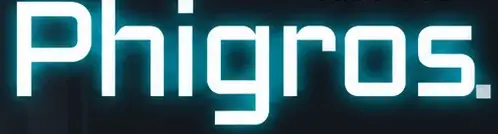

警告：请在游戏前阅读
在某些特定光线或灯光闪烁的刺激下，极个别人可能会出现癫痫症状。同时，当看到屏幕上的某些背景或图像，以及玩某些游戏时，这类人有可能被诱发癫痫症状。某些特殊情况也有可能对以前没有癫痫病史的一部分人触发癫痫症状。
如果您或您的家庭成员有此类病史，请在进行本游戏前咨询医生的建议。如果您在进行游戏时出现以下任何一种症状：头晕、视觉模糊、眼部或肌肉抽搐、失去知觉、失去方向感、不由自主地移动、抽搐，请立即停止游戏，并咨询医生的建议。

Version : 4.0.1.2TYCPHIGROS 4.0.1.2
Leave All Behind + 第九章 · 12 首 / 46 个实际难度曲目材质包：默认
LOCAL本地谱面库
未命名曲目?
Tip: 相信你的指尖，跟随音乐与判定线。
正在准备谱面…
Loading...
COMBO
0000000
LIFE1000
COMBO
0000000
正在缓冲音乐…
正式谱面区域大小
28%62%100%
调整谱面揭秘区域；关闭“更多”不会改变当前设置。
曲目进度
游玩速度
RESULT
RANKED
LOCALLv.?
RESULT
未命名曲目
Lv.?
0000000
NEW BEST0000000+0000000
V
0Max Combo
100.00%Accuracy
0Perfect
0Great
0Good
0Bad
0Miss
0Early
0Late
游玩设置
调整流速、音符显示和触控校准；右侧显示当前模式的音符预览。
渲染与触控
多指触控音符与音效稳帧保护
选择当前模式的流速与校准，预览会同步显示对应的音符。
Note 大小
很小 25%默认 100%很大 350%
Phigros：调整整体 Note 大小。PJSK：使用谱面键宽，厚度跟随透视距离。
谱面视觉流速%
停止 0%官方 176.47%滑块上限 300%
滑块调整视觉流速；也可直接输入百分比。视觉流速不改变音乐播放速度。
低分辨率模式
关闭
降低游戏 Canvas 的内部像素密度，减轻 GPU 填充压力，适合高刷新率移动设备或复杂自制谱。
只改变画面清晰度；触控采样、判定频率、音乐时钟、最高 120 Hz 的动画时间轴和打击音排程完全不变。游玩中切换会立即生效。
左上角实时 FPS
关闭
游玩时显示轻量实时帧率；默认关闭且不会停用后台稳帧采样。iPad Pro 若约为 60：先关闭低电量模式和辅助功能中的“限制帧速率”；若系统仍提供 Safari 高级功能开关，可关闭“Prefer Page Rendering Updates near 60fps”后重开 Safari。网页只能使用系统实际交付的刷新节奏，不能越过系统或 WKWebView 的上限。
无敌模式
关闭
默认关闭。开启后仍可手动游玩；判定线默认保持 AP 金色。出现 Good 时临时变为 FC 蓝色约 1 秒，Combo 保持显示；出现 Bad 或 Miss 时临时变为白色并隐藏 Combo 约 1 秒，随后恢复金线与 Combo。结算保留真实判定并标记为 UNRANKED，不写入最佳成绩。
全局判定校准
更晚 -120 ms默认 0 ms更早 +160 ms
正值会让触控判定相对音乐更早生效，用于抵消设备触屏与音频输出延迟。系统还会根据音乐时钟漂移进行小幅实时修正。
Web Audio 延迟校准未开始
—第 1 次
—第 2 次
—第 3 次
—第 4 次
固定为 100 BPM、4/4 拍。开始后先播放一个预备小节，随后连续四个测试小节；听到每个小节的第一拍时立即按下右侧按钮。四次偏差的算术平均值会自动写入“全局判定校准”。
触控灵敏度
精确 80%默认 100%宽松 220%
增大判定线方向上的有效触控宽度，同时提高 Hold 断触容错和 Flick 短划识别；仍保持垂直判定，不限制手指离判定线的垂直距离。
红键／黄键判定延后
默认 0 ms额外延后120 ms
黄键支持提前接触锁定与短时触控容错；红键支持连续同方向滑动重复触发，并使用独立的宽容时间窗。此滑块只额外延后特殊键目标时刻。
打击动画大小
较小 80%默认 118%很大 260%
放大材质包逐帧打击动画；方块粒子保持与中心动画一致的官方相对比例，不改变 Note 本体大小。
打击音效音量
静音 0%推荐 72%增强 150%
只调整 Note 打击音效，不改变歌曲音量。右侧预览每次落键都会按当前音量播放材质包中的 click 音效。
实时落键预览当前模式的音符会循环落向判定线，并播放打击音效和动画